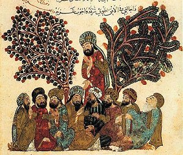

Sacred Texts Islam
|
 |
The Maqámát
|
A Maqama (plural, Maqamat) is an Arabic rhymed prose literary form, with short poetic passages. Maqama is from a root which means 'he stood,' and in this case it means to stand in a literary discussion in order to orate.
The two classical exponents of the Maqama were Hamadhani (967-1007), the composer of this work, and the later and better-known Hariri (1054-1122). Hamadhani was born in Hamadhan, the ancient Ecbatana, in what is now Iran (to the southwest of Tehran) and spent his life as a wandering scholar. The Maqamat of Hamadhani and Hariri have a similar structure. They both consist of a series of unrelated episodes involving a wandering narrator, and a trickster protagonist. In the Maqamat of Hamadhani, the narrator is an alter ego of Hamadhani, a wandering scholar named Isa ibn Hisham. In each tale, he encounters a mysterious rogue named Abul-Fath al-Iskanderi.
Iskanderi wanders the earth, surviving on his wits and a silver tongue, running scams, always one step ahead of an angry mob. Each story is a small capsule description of a sometimes absurd predicament that the characters find themselves in. Nonetheless the stories are often used as framing for discourses on serious topics such as predestination, the vanity of human life, and the inevitability of death and judgement. The work brings to mind Jack Kerouac's On the Road, with its tales of Dharma bums wandering through a rich and morally ambiguous land, and the interaction between the Sal Paradise/Dean Moriarty characters.
The Maqamat presents a vivid street-level view of the medieval Islamic countries at the height of their power and culture. We meet merchants, clerics, peasants, sultans, scholars, and, literally, an entire catalog of swindlers. We get to visit fabled cities of Iraq, Iran, Arabia, Yemen, and other middle eastern locations. Some of these will be familiar from the headlines: Mosul, Basra, Samara, and Baghdad, (which Hamadhani calls 'The City of Peace').
Production notes: This translation is very rare, and to my knowledge has never been reprinted. Because the text is rich with allusions that would be difficult to grasp without the footnotes, I included all of the apparatus. Due to the limits of current scanning technology, I had to omit text in the Arabic alphabet, with a few exceptions. The omitted passages and words in the Arabic alphabet are indicated by the ellipsis character in green (…). This text uses Unicode extensively, so if you have trouble viewing it, please refer to the Unicode page.